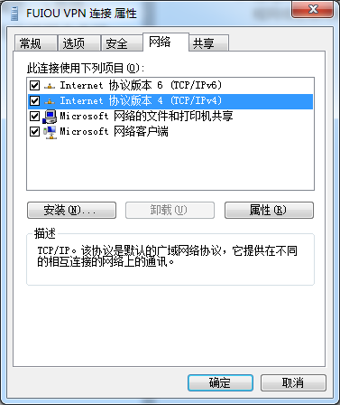
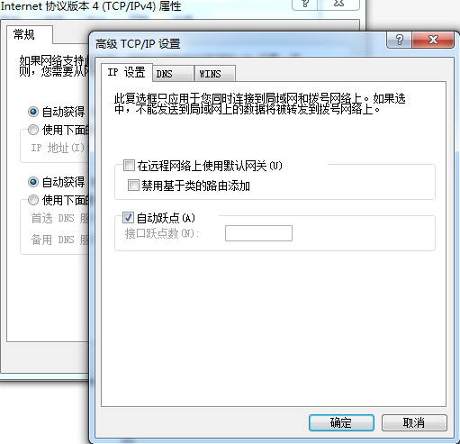

因为工作需要可能要在机器连接公司的VPN，但一般情况下连了VPN就无法连接到外网了，本文主要是讲解如何在Windows上配置，从而让固定ip走VPN，其余走本地网络。
- 按照正常流程配置好VPN
- 在vpn连接属性–>网络–>Internet协议版本4–>属性–>高级–>去掉《在远程网络上使用默认网关》；这样做让所有连接都走本地网络连接，不走vpn。

 - 连接vpn，获取vpn分配的ip
输入命令：结果如下：1
>ipconfig
1
2
3
4
5PPP 适配器 FUIOU VPN 连接:
连接特定的 DNS 后缀 . . . . . . . :
IPv4 地址 . . . . . . . . . . . . : 192.168.18.101
子网掩码 . . . . . . . . . . . . : 255.255.255.255
默认网关. . . . . . . . . . . . . : - 添加route解析 192.168.8.22 –>想要通过vpn访问的ip
1
route add -p 192.168.8.22 mask 255.255.255.255 192.168.18.101 metric 2
192.168.18.101 –> 上面vpn分配的ip - 在命令行中加入这个命令。使用下面命令进行测试
ping 192.168.8.22
至此配置完成，既可以访问外网，又可以访问192.168.8.22这个VPN地址